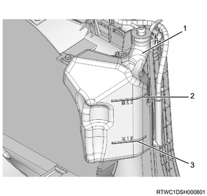
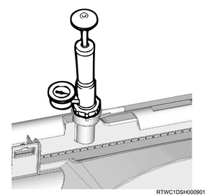
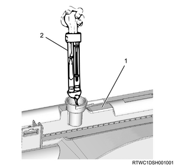
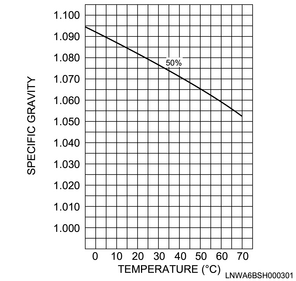

Note
- Inspection of coolant level
1. Inspect coolant.
Note
- Inspect the coolant level in the reserve tank, and when the level is between MAX and MIN, then the level is appropriate.
- Open the radiator cap and confirm that the radiator is filled with the coolant up to the filler portion inside the radiator.
Caution
- Make sure to inspect the coolant level only when the engine is cool.
Note
- If the coolant is insufficient, remove the cap of the reserve tank and refill the coolant to the level around the MAX line.

- Radiator reserve tank
- MAX
- MIN
Note
- Inspection of coolant leakage
2. Inspect water leak using the radiator cap tester.
Note
- Apply the pressure specified below, and inspect the locations described below for a leak.
Pressure： 196 kPa { 2.0 kgf/cm2 }
| Inspection points for coolant leakage |
| Parts | Radiator |
| Water pump |
| Radiator hose |
| Heater hose |

Note
- Engine coolant concentration
3. Set concentration to a standard value.
Note
- The concentration of the engine coolant affects its freezing temperature. Therefore, the concentration should be adjusted to the lowest atmospheric temperature.
- Use the Isuzu genuine engine coolant.
- When the mixing ratio of the engine coolant is 60 % or higher, it overheats easily, and when it is 30 % or lower, it cannot sufficiently prevent corrosion. Therefore, make sure to use the engine coolant with a specified concentration.
- If the engine coolant with concentrations other than a specified one is used, the anti-freezing performance may decrease, causing freezing to occur.
| Long life coolant concentration | ： 50 % |
Note
- However, if the engine or vehicle is used at -30 ℃ {- 22 °F} or below, the coolant concentration of 55% is recommended.
- Measurements of engine coolant concentration
- Hydrometry
4. Measure coolant using hydrometer.
Note
- Use an antifreeze hydrometer and thermometer to measure the specific gravity and coolant temperature.
Caution
- Be aware that the coolant bursts out when the cap is removed while the engine is still hot.
Note
- Use a container that has a depth larger than the length of the hydrometer.

Note
- The temperature of the coolant should be within the specified range.
Specified temperature： 0 to 50 ℃ { 32 to 122 °F }
Note
- After measuring the temperature and specific gravity, find the concentration from the table below.

Note
- Coolant scope method
- Measure the concentration using a coolant scope.